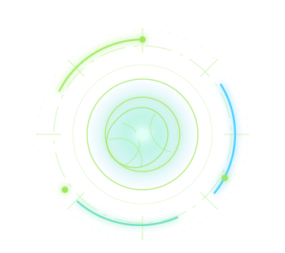

Evolución Humana
Salud del Planeta
Evolución IA
Ronda 1 / 12
Crisis de la ronda
Sequía prolongada
Carta de crisis
Tu carta
-Carta IA
-Suma
-Convergencia

Compite. Converge. Decide qué quieres ser antes de que no quede mundo donde serlo.

PROTOCOLO DE SUPERVIVENCIA · SIGLO XXII
Las crisis ecológicas amenazan la supervivencia del planeta. Humanidad e Inteligencia Artificial deben responder juntas.
Cuando una acierta y la otra falla, la vencedora absorbe una capacidad rival. Cada ronda obliga a elegir: imponerte o converger mientras el planeta pierde tiempo.
Tres indicadores registran cada decisión.
PROTOCOLO DE SINCRONIZACIÓN
Elige tu identidad y la duración del protocolo.
Ronda 1 / 12
Crisis de la ronda
Carta de crisis
Tu carta
-Carta IA
-Suma
-Convergencia
Evento Especial
Ninguno de los dos puede usar las capacidades conquistadas esta ronda.
Se ha salvado el mundo sin que ninguno dominase al otro.
Combina intuición humana con análisis artificial.
50% Humano / 50% IA